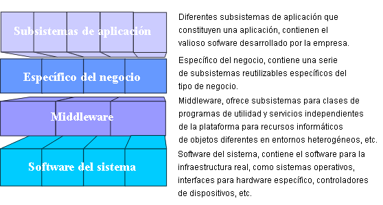

|
Las capas representan una agrupación ordenada de funciones, donde las funciones específicas de la aplicación se sitúan
en las capas superiores, las funciones que distribuyen los dominios de la aplicación se sitúan en las capas del medio y
las funciones específicas del entorno de desarrollo se sitúan en las capas inferiores.
El número y la composición de las capas dependen de la complejidad del dominio de problemas y el espacio de soluciones:
-
Normalmente, sólo hay una capa específica de la aplicación.
-
Los dominios en los que se construyeron sistemas anteriores, o en los que se compusieron sistemas grandes en lugar
de sistemas más pequeños interoperativos, necesitan enormemente compartir información entre equipos de diseño. Como
resultado, es probable que la capa específica de negocios exista parcialmente y se pueda reestructurar en varias
capas para obtener una mayor claridad.
-
Los espacios de soluciones que tengan un buen soporte de productos de middleware y en los que el software de
sistema complejo sea esencial tendrán capas inferiores bien desarrolladas y, quizás, varias capas de middleware y
software de sistema.
Los subsistemas deben organizarse en capas con subsistemas específicos de la aplicación situados en las capas
superiores de la arquitectura, los subsistemas específicos del funcionamiento y de hardware situados en las capas
inferiores y los servicios generales situados en las capas del medio.
A continuación, se muestra una arquitectura de ejemplo con cuatro capas:
-
La capa superior, capa de la aplicación, contiene los servicios específicos de la aplicación.
-
La capa siguiente, capa específica de negocios, contiene componentes empresariales específicos, que se
utilizan en varias aplicaciones.
-
La capa de middleware contiene componentes como constructores de GUI, interfaces de sistemas de gestión de
bases de datos, servicios de sistemas operativos independientes de la plataforma y componentes OLE, como editores
de diagramas y hojas de cálculo.
-
La capa inferior, capa de software del sistema, contiene componentes como, por ejemplo, sistemas operativos,
bases de datos, interfaces de hardware específico, etc.

Una estructura de capas que empieza en el nivel más general de funcionalidad y avanza hacia niveles de funcionalidad
más específicos.
|